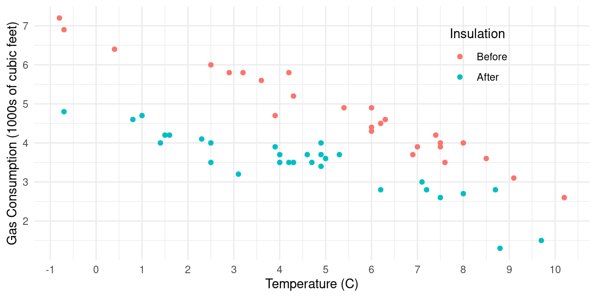
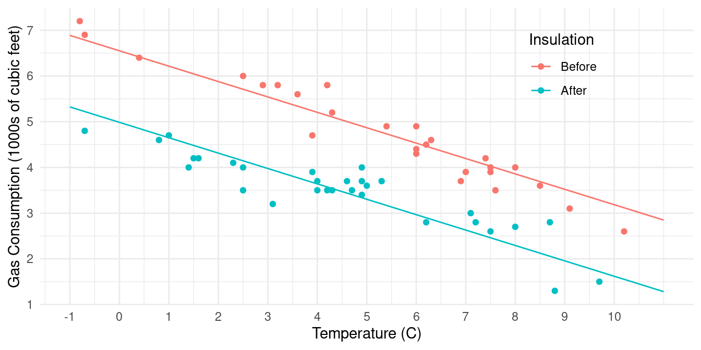
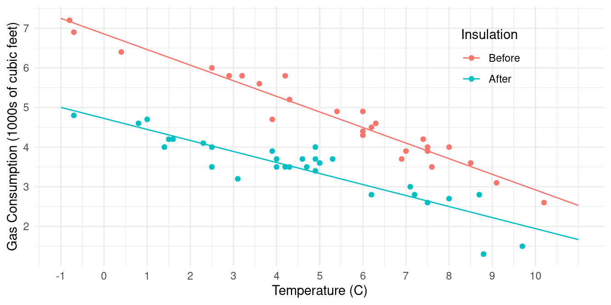

You can also download a PDF copy of this lecture.
library(MASS) # for the whiteside data frame
head(whiteside) Insul Temp Gas
1 Before -0.8 7.2
2 Before -0.7 6.9
3 Before 0.4 6.4
4 Before 2.5 6.0
5 Before 2.9 5.8
6 Before 3.2 5.8Here is a plot of the data (we will consider how to create such plots
later).

Consider the following model specified using the lm
function.
m <- lm(Gas ~ Insul + Temp, data = whiteside)
summary(m)$coefficients Estimate Std. Error t value Pr(>|t|)
(Intercept) 6.551329 0.11808641 55.47911 1.256860e-48
InsulAfter -1.565205 0.09705338 -16.12726 4.310904e-22
Temp -0.336697 0.01776311 -18.95484 2.864348e-25The model specified above can be written as \[ E(Y_i) = \beta_0 + \beta_1 x_{i1} + \beta_2 x_{i2}, \] or \[ E(G_i) = \beta_0 + \beta_1 d_i + \beta_2 t_i, \] where \(G_i\) is gas consumption, \(t_i\) is temperature, and \(d_i\) is defined as \[ d_i = \begin{cases} 1, & \text{if the $i$-th observation is after insulation}, \\ 0, & \text{otherwise}. \end{cases} \] Thus we can also write the model case-wise as \[ E(G_i) = \begin{cases} \beta_0 + \beta_2t_i, & \text{if the $i$-th observation is before insulation}, \\ \beta_0 + \beta_1 + \beta_2t_i, & \text{if the $i$-th observation is after insulation.} \end{cases} \] If we plot expected gas consumption versus temperature, we get a line with a slope of \(\beta_2\) and an intercept of \(\beta_0\) before insulation and \(\beta_0 + \beta_1\) after insulation. 
For the model \[ E(G_i) = \begin{cases} \beta_0 + \beta_2t_i, & \text{if the $i$-th observation is before insulation}, \\ \beta_0 + \beta_1 + \beta_2t_i, & \text{if the $i$-th observation is after insulation,} \end{cases} \] how can we write the following as functions of \(\beta_0\), \(\beta_1\), and/or \(\beta_2\)?
The change in the expected gas consumption per unit increase in temperature before insulation.
The change in the expected gas consumption per unit increase in temperature after insulation.
The difference in the two rates of change described above.
The expected gas consumption before and after insulation at 0C, and at 5C.
The change in expected gas consumption from before to after insulation at 0C, and at 5C.
Now consider the following model specified using the lm
function.
m <- lm(Gas ~ Insul + Temp + Insul:Temp, data = whiteside)
# Note: A shortcut for the model formula a + b + a:b is a*b,
# so we could also write the model formula as Gas ~ Insul*Temp.
summary(m)$coefficients Estimate Std. Error t value Pr(>|t|)
(Intercept) 6.8538277 0.13596397 50.409146 7.997414e-46
InsulAfter -2.1299780 0.18009172 -11.827185 2.315921e-16
Temp -0.3932388 0.02248703 -17.487358 1.976009e-23
InsulAfter:Temp 0.1153039 0.03211212 3.590665 7.306852e-04The model specified above can be written as \[ E(Y_i) = \beta_0 + \beta_1 x_{i1} + \beta_2 x_{i2} + \beta_3 x_{i3}, \] or \[ E(G_i) = \beta_0 + \beta_1 d_i + \beta_2 t_i + \beta_3 d_i t_i, \] where again \(G_i\) is gas consumption, \(t_i\) is temperature, and \(d_i\) is defined as \[ d_i = \begin{cases} 1, & \text{if the $i$-th observation is after insulation}, \\ 0, & \text{otherwise}. \end{cases} \] Thus we can also write the model case-wise as \[ E(G_i) = \begin{cases} \beta_0 + \beta_2t_i, & \text{if the $i$-th observation is before insulation}, \\ \beta_0 + \beta_1 + (\beta_2 + \beta_3)t_i, & \text{if the $i$-th observation is after insulation.} \end{cases} \] If we plot expected gas consumption versus temperature, we get a line with a slope of \(\beta_2\) before insulation and \(\beta_2 + \beta_3\) after insulation, and an intercept of \(\beta_0\) before insulation and \(\beta_0 + \beta_1\) after insulation. 
For the model \[ E(G_i) = \begin{cases} \beta_0 + \beta_2t_i, & \text{if the $i$-th observation is before insulation}, \\ \beta_0 + \beta_1 + (\beta_2 + \beta_3)t_i, & \text{if the $i$-th observation is after insulation,} \end{cases} \] how can we write the following as functions of \(\beta_0\), \(\beta_1\), \(\beta_2\) and/or \(\beta_3\)?
The rate of change in the expected gas consumption per unit increase in temperature before insulation.
The rate of change in the expected gas consumption per unit increase in temperature after insulation.
The difference in the two rates of change described above.
The expected gas consumption before and after insulation at 0C, and at 5C.
The change in expected gas consumption from before to after insulation at 0C, and at 5C.
A linear model can be written as \[
E(Y) = \beta_0 + \beta_1x_1 + \beta_2x_2 + \cdots + \beta_kx_k
\] that has \(k\)
terms, where the \(j\)-th term
is \(\beta_jx_j\). The row labels
returned by summary such as
summary(m)$coefficients Estimate Std. Error t value Pr(>|t|)
(Intercept) 6.8538277 0.13596397 50.409146 7.997414e-46
InsulAfter -2.1299780 0.18009172 -11.827185 2.315921e-16
Temp -0.3932388 0.02248703 -17.487358 1.976009e-23
InsulAfter:Temp 0.1153039 0.03211212 3.590665 7.306852e-04let us identify each term in the model using the following rules.
If the label is (Intercept) them the first term is
\(\beta_0\). Otherwise \(\beta_0\) is excluded.
If the label is the name of a quantitative variable
(e.g., Temp), then the model includes the term \(\beta_jx_j\) where \(x_j\) is the value of that variable for a
given observation.
If the label is the name of a categorical/factor
variable with a category/level “suffix” (e.g., InsulAfter),
then the model includes the term \(\beta_jx_j\) where \(x_j\) is an indicator variable for
when the observation of the categorical/factor variable equals that
category/level.1
If the label is has a colon (:) between two labels
(e.g., InsulAfter:Temp), then the model includes the term
\(\beta_jx_j\) where \(x_j\) is the product of the values
of two \(x\) variables defined by the
two labels (i.e., \(x\) defined by
InsulAfter times the \(x\)
defined by Temp).
Example: Here’s an alternative parameterization of the model used above.
m <- lm(Gas ~ -1 + Insul + Insul:Temp, data = whiteside)
summary(m)$coefficients Estimate Std. Error t value Pr(>|t|)
InsulBefore 6.8538277 0.13596397 50.40915 7.997414e-46
InsulAfter 4.7238497 0.11809668 39.99985 9.918382e-41
InsulBefore:Temp -0.3932388 0.02248703 -17.48736 1.976009e-23
InsulAfter:Temp -0.2779350 0.02292426 -12.12405 8.936039e-17How would we write this model?
“The default output isn’t necessarily useful, and what is useful is not necessarily the default output.” — Me
For a regression model like \[
E(Y_i) = \beta_0 + \beta_1 x_{i1} + \beta_2 x_{i2} + \cdots + \beta_k
x_{ik},
\] a quantity of interest can often be written as a linear
function of the model parameters (sometimes also called a
linear combination or linear contrast of the
parameters). This can be written in general as \[
\ell = a_0\beta_0 + a_1\beta_1 + a_2\beta_2 + \cdots + a_k\beta_k + b,
\] where \(a_0, a_1, \dots,
a_k\) and \(b\) are specified
coefficients. There are several ways to do this on R. One way is to use
the lincon function (for linear
contrast) from the trtools
package.
Example: Consider the following model.
m <- lm(Gas ~ Insul + Temp + Insul:Temp, data = whiteside)
summary(m)$coefficients Estimate Std. Error t value Pr(>|t|)
(Intercept) 6.8538277 0.13596397 50.409146 7.997414e-46
InsulAfter -2.1299780 0.18009172 -11.827185 2.315921e-16
Temp -0.3932388 0.02248703 -17.487358 1.976009e-23
InsulAfter:Temp 0.1153039 0.03211212 3.590665 7.306852e-04library(trtools) # so we can use lincon below
options(digits = 4) # for display purposesHow do we write the following as linear combinations and then make inferences about that linear combination?
The rate of change in expected gas consumption before insulation is \(\beta_2\).
lincon(m, a = c(0,0,1,0), b = 0) estimate se lower upper tvalue df pvalue
(0,0,1,0),0 -0.3932 0.02249 -0.4384 -0.3481 -17.49 52 1.976e-23The rate of change in expected gas consumption after insulation is \(\beta_2 + \beta_3\).
lincon(m, a = c(0,0,1,1), b = 0) estimate se lower upper tvalue df pvalue
(0,0,1,1),0 -0.2779 0.02292 -0.3239 -0.2319 -12.12 52 8.936e-17The difference in the two rates of change described above (after minus before) is \(\beta_3\).
lincon(m, a = c(0,0,1,0), b = 0) estimate se lower upper tvalue df pvalue
(0,0,1,0),0 -0.3932 0.02249 -0.4384 -0.3481 -17.49 52 1.976e-23The expected gas consumption before and after insulation at 5C are \(\beta_0 + \beta_25\) and \(\beta_0 + \beta_1 + (\beta_2 + \beta_3)5\), respectively.
lincon(m, a = c(1,0,5,0), b = 0) # before estimate se lower upper tvalue df pvalue
(1,0,5,0),0 4.888 0.06383 4.76 5.016 76.57 52 3.885e-55lincon(m, a = c(1,1,5,5), b = 0) # after estimate se lower upper tvalue df pvalue
(1,1,5,5),0 3.334 0.06024 3.213 3.455 55.35 52 6.772e-48The change in the expected gas consumption from before to after insulation at 5C is \(\beta_1 + \beta_35\).
lincon(m, a = c(0,1,0,5), b = 0) estimate se lower upper tvalue df pvalue
(0,1,0,5),0 -1.553 0.08777 -1.73 -1.377 -17.7 52 1.155e-23Note: Because in many cases we have \(b =
0\), the b argument has this as a default value and
can be omitted if \(b = 0\). So we can
write lincon(m, a = c(0,1,0,5)) instead of
lincon(m, a = c(0,1,0,5), b = 0).
There are alternative “systems” to indicator variables when dealing with categorical explanatory variables. One example is where the reference category/level gets a value of -1 instead of 0. These have some applications when using specialized parameterizations of linear models and simplify some calculations, but they can often be avoided. Most software (including R) uses the indicator/dummy variable system by default.↩︎